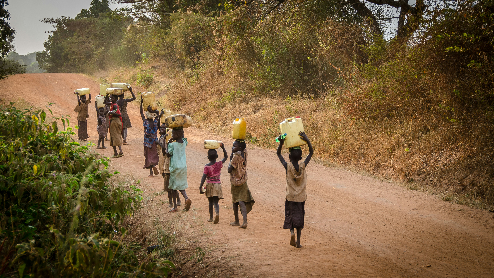

Våra
Referenser
- Ahona, N., Hasan Anik, A., M. Tareq, S. (2025). A Systematic Review of Water, Sanitation and Hygiene of Bangladesh: Prospects and Challenges to Achieve Sustainable Development. Water and Environment Journal, 39(4), 402-418. https://doi.org/10.1111/wej.70009
- Cronk, R. Guo, A. Flemming, L. Bartram, J. (2021). Factors associated with water quality sanitation, and hygiene in rural schools in 14 low- and middle-income countries. Science of The Total Environment, 761, 144226. https://doi.org/10.1016/j.scitotenv.2020.144226
- Global Citizen. (30 maj 2018). Period Poverty, Stigma Are Keeping Girld Out of School. https://www.globalcitizen.org/en/content/menstrual-hygiene-day-education/
- Globala målen. (3 december 2024). Mål 6: Rent vatten och sanitet. https://globalamalen.se/om-globala-malen/mal-6-rent-vatten-och-sanitet/
- Hallgren, L., & Ljung, M. (2005). Miljökommunikation: aktörsamverkan och processledning. Studentlitteratur.
- Hannah Ritchie (2025). Two billion people don’t have safe drinking water: what does this really mean for them? Published online at OurWorldinData.org. Retrieved from: https://archive.ourworldindata.org/20260428-121251/what-no-safe-water-means.html [Online Resource] (archived on April 28, 2026).
- Hedenus, F., Persson, U. M. & Sprei, F. (2022). Hållbar utveckling: nyanser och tolkningar. Andra upplagan. Lund: Studentlitteratur.
- Our World in Data. (u.å.). Our World in Data. https://ourworldindata.org/
- Röda Korset. (u.å.). Så renar man vatten i en kris. https://www.rodakorset.se/var-varld/vatten-och-sanitet/hjalp-hur-funkar-det/
- Shadabi, L., & Ward, F. A. (2022). Predictors of access to safe drinking water: policy implications. Water policy, 24(6), 1034. https://doi.org/10.2166/wp.2022.037
- Sida. (29 november 2023). Vatten och sanitet. https://sida.se/sida-i-varlden/teman/vatten-och
- SO-rummet. (6 augusti 2024). Sverige idag. https://www.so-rummet.se/kategorier/samhallskunskap/varldens-lander-samhallskunskap/europa-samhallskunskap/fakta-om-sverige#
- SO-rummet. (6 augusti 2024).Togo idag. https://www.so-rummet.se/kategorier/samhallskunskap/varldens-lander-samhallskunskap/afrika-samhallskunskap/fakta-om-togo#
- SO-rummet. (6 augusti 2024).Zimbabwe idag. https://www.so-rummet.se/kategorier/samhallskunskap/varldens-lander-samhallskunskap/afrika-samhallskunskap/fakta-om-zimbabwe#
- UNESCO Institute for Statistics. (2025). Schools with access to drinking water [Data set]. Our World in Data. https://ourworldindata.org/grapher/schools-access-drinking-water?country=~TGO
- Unicef Sverige. (2024). Vatten, sanitet och hygien. https://unicef.se/ren-och-trygg-miljo/vatten-sanitet-och-hygien
- Unicef. (u.å.). Water, sanitation and hygiene (WASH). https://www.unicef.org/supply/water-sanitation-and-hygiene
- Unwater. (u.å). Handwashing and Hand Hygiene. https://www.unwater.org/water-facts/handwashing-and-hand-hygiene
- Utrikespolitiska institutet. (24 september 2025). Zimbabwe – Ekonomisk översikt. I Landguiden. https://www.ui.se/landguiden/lander-och-omraden/afrika/zimbabwe/oversikt/
Video Källor
- Coding Artist. (14 januari 2022). Scroll To Top Button With Scroll Progress | HTML, CSS & Javascript [Video]. https://www.youtube.com/watch?v=dvtDGyftss0
- CodingNepal. (14 september 2024). Create A Responsive Coffee Website in HTML CSS & JavaScript | Step-By-Step Tutorial [Video]. https://www.youtube.com/watch?v=MYFgtnKMDp4
- Online Tutorials. (25 november 2022). Liquid Drop Login Page using Html & CSS | Water Drop Effects [Video]. https://www.youtube.com/watch?v=u4kuVki1V20
Bild Källor
- Pexels. (u.å.). Pexels. https://www.pexels.com/sv-se/
- Unsplash. (u.å.). Unsplash. https://unsplash.com/